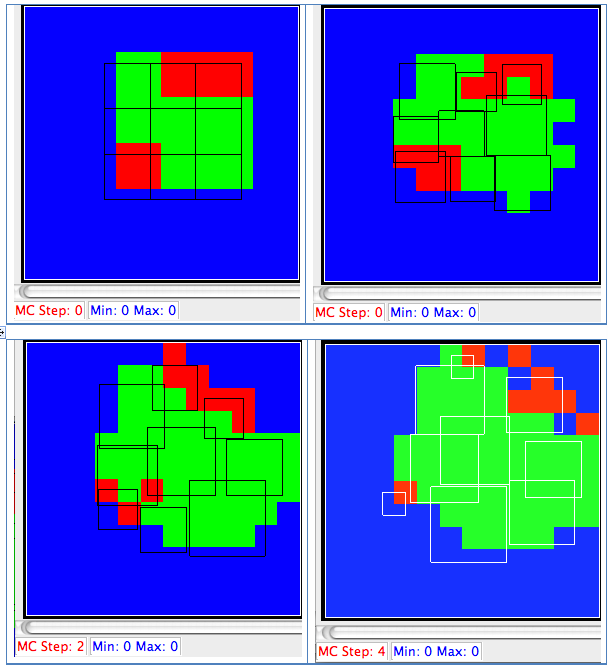

Note: for this vis technique to work, you must use the center of mass plugin:
<Plugin Name="CenterOfMass"/>
This technique arose from a request by Abbas to be able to display the connections between (pairs of) cells for the FocalPointPlasticity plugin.
For testing purposes, I created a simple 12x12 lattice to experiment with cell glyphs:

Representing cells as squares (at centroids)
Using glyphs (circles), colored by cell type, scaled by volume
heiland@dhcp-cs-244-227:~/dev/Glazier/cc3d-1-13-10/Demos$ cat aa3.xml
<CompuCell3D>
<Potts>
<Dimensions x="12" y="12" z="1"/>
<Anneal>10</Anneal>
<Steps>1000</Steps>
<Temperature>10</Temperature>
<Flip2DimRatio>1</Flip2DimRatio>
<NeighborOrder>2</NeighborOrder>
<RandomSeed>3</RandomSeed>
</Potts>
<Plugin Name="Volume">
<TargetVolume>15</TargetVolume>
<LambdaVolume>2.0</LambdaVolume>
</Plugin>
<Plugin Name="CellType">
<CellType TypeName="Medium" TypeId="0"/>
<CellType TypeName="Condensing" TypeId="1"/>
<CellType TypeName="NonCondensing" TypeId="2"/>
</Plugin>
<Plugin Name="Contact">
<Energy Type1="Medium" Type2="Medium">0</Energy>
<Energy Type1="NonCondensing" Type2="NonCondensing">16</Energy>
<Energy Type1="Condensing" Type2="Condensing">2</Energy>
<Energy Type1="NonCondensing" Type2="Condensing">11</Energy>
<Energy Type1="NonCondensing" Type2="Medium">16</Energy>
<Energy Type1="Condensing" Type2="Medium">16</Energy>
<NeighborOrder>2</NeighborOrder>
</Plugin>
<Plugin Name="CenterOfMass"/>
<Steppable Type="BlobInitializer">
<Gap>0</Gap>
<Width>2</Width>
<CellSortInit>yes</CellSortInit>
<Radius>4</Radius>
</Steppable>
</CompuCell3D>
heiland@dhcp-cs-244-227:~/dev/Glazier/cc3d-4-20-10/Demos/simple12x12_xml_04_20_2010_11_12_40/LatticeData$ cat Step_0000.vtk # vtk DataFile Version 3.0 vtk output ASCII DATASET STRUCTURED_POINTS DIMENSIONS 12 12 1 SPACING 1 1 1 ORIGIN 0 0 0 POINT_DATA 144 FIELD FieldData 3 CellType 1 144 char 0 0 0 0 0 0 0 0 0 0 0 0 0 0 0 0 0 0 0 0 0 0 0 0 0 0 0 0 0 0 0 0 0 0 0 0 0 0 0 0 0 0 0 0 1 0 0 0 0 0 0 0 2 2 1 1 1 1 0 0 0 0 0 2 2 2 1 1 1 1 1 0 0 0 0 1 1 1 1 1 1 1 0 0 0 0 0 1 1 1 1 1 1 1 1 0 0 0 0 0 1 1 2 2 1 2 0 0 0 0 0 0 1 1 1 2 2 2 0 0 0 0 0 0 0 0 0 0 0 0 0 0 0 0 0 0 0 0 0 0 0 0 0 0 CellId 1 144 long 0 0 0 0 0 0 0 0 0 0 0 0 0 0 0 0 0 0 0 0 0 0 0 0 0 0 0 0 0 0 0 0 0 0 0 0 0 0 0 0 0 0 0 0 3 0 0 0 0 0 0 0 1 1 2 2 3 3 0 0 0 0 0 1 1 1 2 2 3 3 3 0 0 0 0 4 4 4 5 5 6 6 0 0 0 0 0 7 4 5 5 6 6 6 6 0 0 0 0 0 7 7 8 8 6 9 0 0 0 0 0 0 7 7 7 8 9 9 0 0 0 0 0 0 0 0 0 0 0 0 0 0 0 0 0 0 0 0 0 0 0 0 0 0 ClusterId 1 144 long 0 0 0 0 0 0 0 0 0 0 0 0 0 0 0 0 0 0 0 0 0 0 0 0 0 0 0 0 0 0 0 0 0 0 0 0 0 0 0 0 0 0 0 0 3 0 0 0 0 0 0 0 1 1 2 2 3 3 0 0 0 0 0 1 1 1 2 2 3 3 3 0 0 0 0 4 4 4 5 5 6 6 0 0 0 0 0 7 4 5 5 6 6 6 6 0 0 0 0 0 7 7 8 8 6 9 0 0 0 0 0 0 7 7 7 8 9 9 0 0 0 0 0 0 0 0 0 0 0 0 0 0 0 0 0 0 0 0 0 0 0 0 0 0